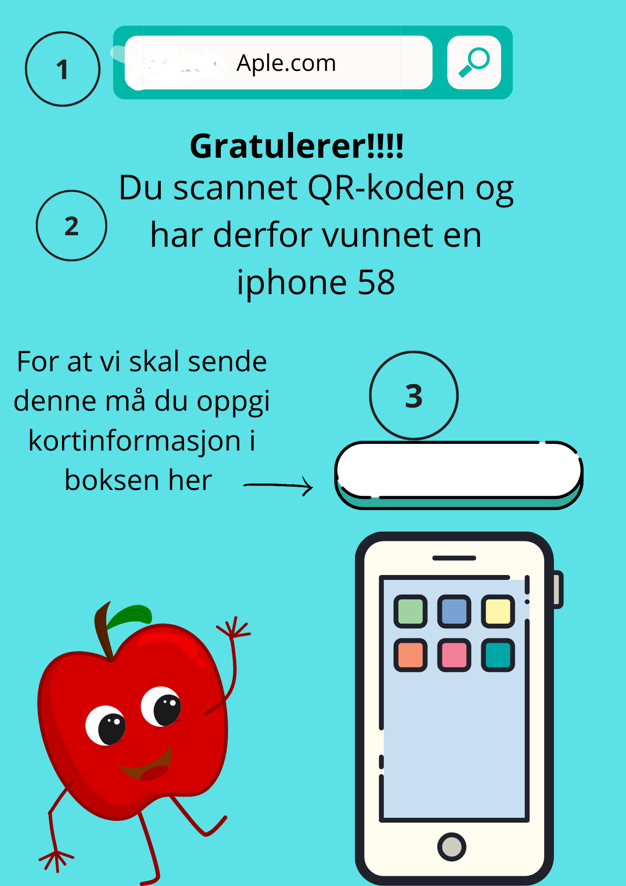
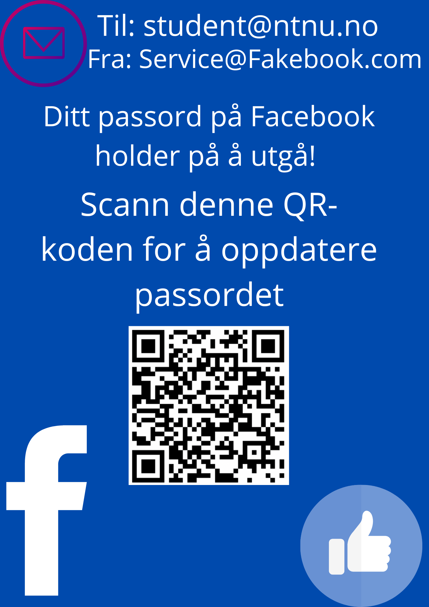
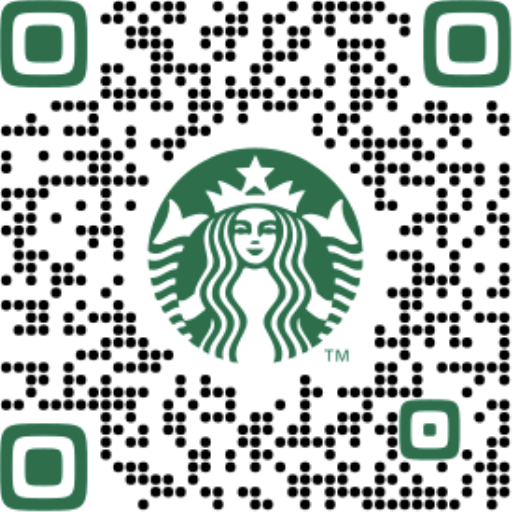
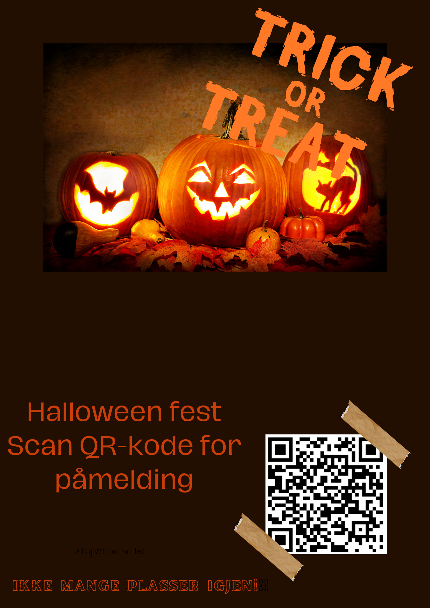
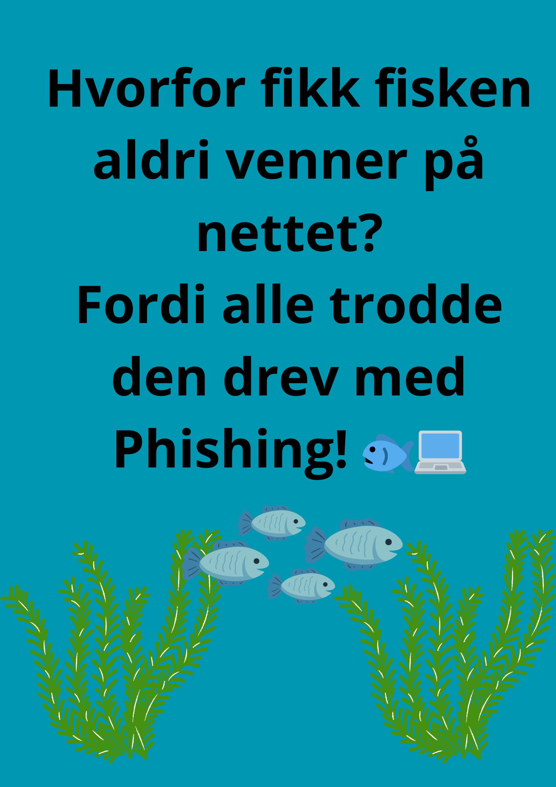

Quishing
QR-Kode phishing eller også kalt Quishing er ikke nytt, men har økt betraktelig de siste årene. Spesielt etter covid-19, da det ble en øking i bruk av QR-koder (Puri, Natasha, 4.november, 2024). På denne siden skal du lære noen tips du kan praktisere, for å minimere risikoen for å bli utsatt for denne type phishing.
Tips
- Sjekk URL! De fleste QR-skannere vil gi deg muligheten til å se URL-en før den sender deg dit. Inspiser først om den ser pålitelige ut (se eksempel på bilde under). Dette kan blant annet innebære å sjekke at domenenavnet til nettsiden stemmer. Er man usikker så bør man også sjekke URL-en først med for eksempel et verktøy som sjekker sikkerheten til en URL for deg. Hold også enheten din oppdatert (både apper og operativsystem), da den kan hjelpe å kjempe mot kjente trusler.
- Vær skeptisk! Hvis en QR-kode tar deg til en plass som spør om sensitiv informasjon (kortinfo, personopplysninger, osv), da store selskap sjeldent spør om slike ting igjennom en QR-kode. Undersøk nettsiden (eks: skrivefeil og URL) før man oppgir slik info. Hvis man er usikker, undersøk videre til man er sikker. På eksemplet under ser man at siden prøver å utgir seg for å være Apple, som lokker med at du har vunnet en Iphone.
Se etter dette

-
Her ser man at URL-en ikke stemmer overens med
Apple sin URL, som vil si at dette er en falsk nettside.
-
Teksten sier at du har vunnet en Iphone 58.
Da kan man vurdere om dette har noe kredibilitet.
Som det ikke har da premien er urealistisk, da den ikke finnes
-
Her ber de deg oppgi sensitiv informasjon.
Da vi har vurdert at siden ikke har noe kredibilitet, så bør man
aldri oppgi noe sensitiv informasjon.
Quishing på epost
E-poster er ikke alltid trygge! Quishing fra e-post har økt i det siste, og det er ekstra viktig å inspisere mail-adressen til sender, da de ofte utgir seg for å være andre bedrifter.
Hvis vi ser på e-posten til høyre, så er det noen som
utgir seg for å være fra Facebook. Her ber de deg om å
skanne en QR-kode for å oppdatere passordet ditt.

Ved en nærmere inspeksjon av e-posten kan man se at
avsenderens mail-adresse ikke stemmer overens med
Facebook sin.
Kredibilitet
I dette eksempelet ser vi en QR-kode fra Starbucks.
Denne inkluderer Logo og farge-tema fra Starbucks.
Dette er som nevnt noe bedrifter ofte betaler ekstra for, som
gir disse typer QR-koder mer kredibilitet.
husk! Det er fortsatt lurt å være kritisk. Men hadde jeg vært
på en Starbucks, der det var en QR-kode med Starbucks logo
Hadde den mest sannsynlig vært trygg å skanne.

Se etter tukling med QR-kode! Spesielt hvis man skanner en fysisk QR-kode. Da et kjent triks er å klistre over falske QR-koder over de ekte (Puri, Natasha, 4.november, 2024). Selv om plakaten har kredibilitet og ser ekte ut, så kan selve QR-koden på plakaten være falsk. Dette handler for det meste om QR-koder i den fysiske verden, da disse kan tukles med av hvem som helst. Så se derfor etter tegn på at QR-koden er tuklet med eller ikke.

På plakaten over kan vi tydelig se at QR-koden er tuklet med.
Vi vil derfor la være å skanne den, helt til vi finner den som
originalt hører til plakaten (mest sannsynlig under den påklistrede
QR-koden).
Mengden forsøk på Quishing har økt de siste årene, og det er vanskelig å være 100% trygg.
Men med disse tipsene så kan man unngå de fleste Quishing forsøkene.
Belønning!
Som belønning for å ha lest på QR-Phishing tips, så får du en Phishing vits!
